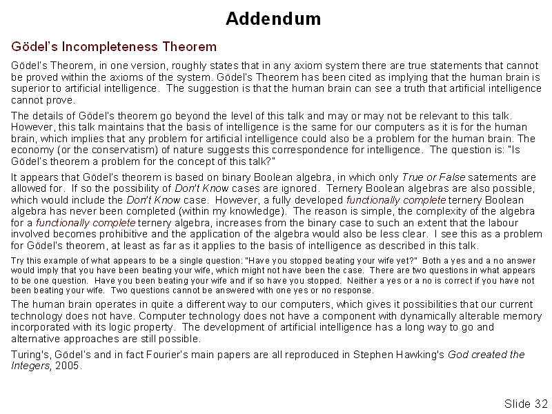

Slide 32 of 32
1: Intelligence: What it is and How it Works
2: Life is change
3: Definitions of Intelligence taken from Wikipedia
4: Decisions, Decisions
5: The Serial Universe
6: Memory and a decision making ability
7: Conceptual state machine
8: State Machines continued
9: State Machines continued - 2
10: State Machines are not new
11: Processes
12: Mechanisms that comply with the requirements of a state machine 1
13: Mechanisms that comply with the requirements of a state machine - 2
14: Some facts about neurons
15: Some facts about neurons - 2
16: The multifunction neuron
17: Comparison between digital circuitry and neuronal circuitry
18: Some peculiarities of the processes involved in intelligence
19: Interconnection schemes
20: What is reality? What is perception?
21: What is reality? What is perception? - 2
22: How does the brain code its information?
23: How does the brain code its information? 2
24: The streams of pulses in the brain
25: The streams of pulses in the brain - 2
26: The streams of pulses in the brain - 3
27: The streams of pulses in the brain - 4
28: The streams of pulses in the brain - 5
29: Some consequences and conclusion
30: Some consequences and conclusion - 2
31: References
32: Addendum